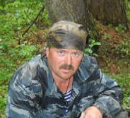
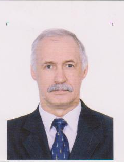
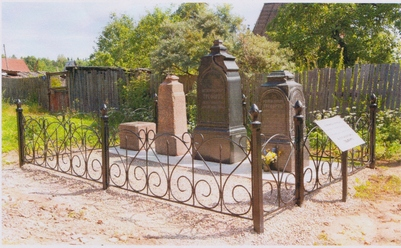

ОКТЯБРЬ 2012 года
|
Мы были солдатами
«21.02.1942 г.
158 стрелковая дивизия с утра атакует Холмец и прилегающие к нему высоты. В небе господствует вражеская авиация.
875 стрелковый полк ведет борьбу за овладение снежным валом Сев. Вост. окраины Холмеца.
22.02.1942г.
Бои за Холмец носят ожесточенный характер. Сильный пулеметно-минометный огонь и беспрерывные бомбардировки с воздуха заставили части отойти на исходное положение» (выписка из ЖБД 158 сд).
Вокруг меня одна смерть... Я один живой... в снегу на трескучем морозе... мне уже не хочется стрелять, хочется одного - конца мучений. Я не могу даже приподнять голову от земли, а каску ненавижу, ее видно издалека. Хочу слиться с землей, хочу, чтобы каска оказалась вдруг шапкой-невидимкой из добрых сказок, что рассказывали мне в детстве.
 Почему он стреляет и стреляет, и стреляет? Там, на высотке Храм. Помолиться бы на Святую церковь... только сейчас она черна и холодна. Ссутулившись, скорбит о нас... Островок надежды в пустыне ужаса... Почему Господь допустил это? Справа от меня уткнулись в красное от крови снежное покрывало Ваня Тюрин и Коля Мещеряков - бывшие автозаводцы, товарищи, друзья. И не существует больше для них этого невыносимого мороза, страха. боли и... меня. Убиты... нет! Просто спят сном спокойным. Спят сном вечным... Спят... А я? И светлое неудержимое чувство долга, справедливости и... ярости не поднимет уже нас в атаку. Чувств не осталось, как не осталось и НАС...
Я теперь один на снежном валу у Холмеца, перед Святой церковью на проклятой войной земле. Я чувствую как Смерть, бродившая по своим владениям, остановилась за моей спиной, любуется на меня, улыбается... забирается костлявыми ледяными руками под одежду… то шепчет что-то страшное в уши, то смеется... или это разбушевавшаяся зима сводит меня с ума!? Я не чувствую ног. В этих хваленых армейских ботинках так же холодно, как и без них. Проклятые неудобные колодки... Невольно усмехнулся, когда-то я так гордился, примеряя их!
И зачем они мне? Вымучили меня. Зачем они? Зачем тут я? И пулеметчик? Притих... Да, пулеметчики «Гросс Дойч» хорошо знают свое дело... Вокруг меня ни стона, ни крика - мертвая тишина. Три батальона уже поклонились Куполам. Видит ли Всевышний все это? Видит ли меня? Слышит ли? Господи, обрати на меня свой взор! Дай уцелеть, дай выжить в жестоких сражениях, спаси и помоги... Не дай еще одной матери рыдать о не вернувшемся сыне. Прошу. Молю! Тишина... Быть может, Бог сейчас на другом краю земли?...
 Покинул свою Холмецкую обитель, отдал ее в руки сытых врагов, топчущих родные края. Тишина... Никто не призовет: «В АТАКУ!». Да и кто теперь откликнется!? Москвичей-ополченцев, слесарей, фрезеровщиков, мастеров забрала в одночасье старуха-война, извела и похоронила без почестей в Холмецкой мёрзлой земле. Отчаяние... отчаяние сковало мое сознание. И уже не ощущаю холода... двигаться вперед? Куда вперед!? Яне могу подняться, даже пошевелиться нет сил! А винтовка? Винтовка!.. Ну какой с нее толк в замерзших не слушающихся пальцах?!. Тишина... А хочу ли я дожить до окончания войны? Хочу ли вновь и вновь убивать под крики «УРА!»? Хочу ли видеть, как один за другим падают мои друзья? Хочу ли жить со страшной раной в сердце и лицами убитых однополчан в памяти? Яне хочу даже завтрашнего дня! Только покоя... Покоя сейчас же, сию минуту... Боже, скорее бы все закончилось... Мне суждено умереть. Я с этой мыслью смирился. Жаль лишь, что ни раньше, ни перед боем не нашел комсорга. Где он сейчас? Наверное, тоже «принял обряд»?... Нет никого... Я один... Хочу умереть, умереть героем - для матери... не безымянным солдатом - для тех, кого защищаю... И комсомольцем, в чьи ряды я так и не успел вступить. Слышишь ли ты, Господи, мои мольбы? Мама! Мама, я знаю, ты-то уж точно слышишь меня! Ты слышишь, ведь ты мать! Я жив, но так далеко от тебя. Я скоро увижу тебя с небес, а потом всегда буду рядом. Смерть будет хранить мой сон, а я буду хранить тебя, мама... Покинул свою Холмецкую обитель, отдал ее в руки сытых врагов, топчущих родные края. Тишина... Никто не призовет: «В АТАКУ!». Да и кто теперь откликнется!? Москвичей-ополченцев, слесарей, фрезеровщиков, мастеров забрала в одночасье старуха-война, извела и похоронила без почестей в Холмецкой мёрзлой земле. Отчаяние... отчаяние сковало мое сознание. И уже не ощущаю холода... двигаться вперед? Куда вперед!? Яне могу подняться, даже пошевелиться нет сил! А винтовка? Винтовка!.. Ну какой с нее толк в замерзших не слушающихся пальцах?!. Тишина... А хочу ли я дожить до окончания войны? Хочу ли вновь и вновь убивать под крики «УРА!»? Хочу ли видеть, как один за другим падают мои друзья? Хочу ли жить со страшной раной в сердце и лицами убитых однополчан в памяти? Яне хочу даже завтрашнего дня! Только покоя... Покоя сейчас же, сию минуту... Боже, скорее бы все закончилось... Мне суждено умереть. Я с этой мыслью смирился. Жаль лишь, что ни раньше, ни перед боем не нашел комсорга. Где он сейчас? Наверное, тоже «принял обряд»?... Нет никого... Я один... Хочу умереть, умереть героем - для матери... не безымянным солдатом - для тех, кого защищаю... И комсомольцем, в чьи ряды я так и не успел вступить. Слышишь ли ты, Господи, мои мольбы? Мама! Мама, я знаю, ты-то уж точно слышишь меня! Ты слышишь, ведь ты мать! Я жив, но так далеко от тебя. Я скоро увижу тебя с небес, а потом всегда буду рядом. Смерть будет хранить мой сон, а я буду хранить тебя, мама...
И Смерть шевельнулась за моей спиной. Я с трудом открыл глаза и повернул голову. Нет, то была не моя смерть! Не моя... Медленно и тяжело дыша, ко мне подползал Рашид - наш санитар. Живой... живой! Я смотрю на него, как на чудо, пытаюсь что-то сказать, и... не успеваю... Вместе со мной очнулся от дум и пулеметчик. «Немецкая Машина» сбоев не дает... санитар, добравшийся наконец до меня, уткнулся в мой бок и затих. Судорожно переворачиваю его на спину и запихиваю окоченевшие руки Рашиду за пазуху к уходящему теплу.
Смерть ласково своим теплым саваном согревает мои ладони и зовет меня к себе... «Святой Гюнтер» с вершины звонницы «окрестил» пулеметной очередью. Он не щадил даже погибшего уже санитара. Что ему до правоверного мусульманина? Затявкали немецкие пехотные минометы, снова и снова смешивая с землей, уже погибший 875полк. Я окинул взором тела, если их еще можно назвать телами. Всего лишь мишени для врага, но друзья для меня. Иван, Коля, Рашид и остальные, с кем шел в бой. Они не предали, они были и остались рядом.
Рядом... и мне теперь не страшно... Пули с противным визгом рвут землю... Господи, я хочу перекреститься! Немец, дай же передышку! Словно услышав меня, пулеметчик не торопясь, со знанием дела, поправил прицел, давая мне возможность подняться - никто не заставит меня встретить смерть на коленях!... Длинная трассирующая очередь ослепила глаза прощальным фейрверком и... темнота... Пулю, убившую меня, я не услышал... Смерть бережно укрыла меня снежным покрывалом.
Сергей Виноградов, д. Холмец Оленинского района
Имена и события в рассказе реальные.
|

|
200-летию Отечественной войны 1812 года
и изгнания «Великой армии» Наполеона
из пределов России посвящается
В.П. Пяткин, ученый секретарь Тверского регионального научного военно-исторического центра
Комендант Твери
Генерал-майор, комендант Твери Фёдор Трефурт (Трефорт) был участником всех войн против Наполеона,
Родился 12 июля 1774 года в городе Нарве (был пятым ребёнком), род происходил из австрийских дворян. Фёдор Фёдорович владел имением в деревне Жорновка Васильевской волости, владел землями в районе деревни Воскресенское-Собакино (сегодня – деревня Красная гора Калининского района) Тверского уезда Тверской губернии.
Вступив в военную службу, Трефурт принимал участие в кампаниях 1805 года в Австрии и 1806—1807 годов в Восточной Пруссии. Командир Тобольского мушкетерского (с 1811 - пехотный) полка (1808-14, 1814-16), участник Отечественной войны 1812 и заграничных походов русской армии 1813-15, за сражение при Бишофсверде (30 апреля 1813) награжден орденом Святого Георгия 4-й ст., за взятие Парижа - прусским орденом «Пур ле Мерит», всего участвовал в 56 сражениях, комендант г. Тверь; был женат на Ольге Федоровне (Элеонора Ольга), урожденной фон Герланд (1 ноября 1792, С-Петербург - 10 апреля 1847, Жорновка)
27 июля 1808 года подполковник Трефурт был назначен командиром Тобольского (мушкетёрского) пехотного полка (Полковое знамя Георгиевское с надписями: "За отличие в 1814 году против Французов, за дело при Четати 25 Декабря 1853 и за Севастополь в 1854 и 1855 годах" и "1703-1903". С Александровской юбилейной лентой. Высочайший приказ от 6.12.1903 г. Поход за военное отличие. Пожалован 6.04.1830 г. за отличия в русско-турецкую войну 1828-29 гг. Знаки на головные уборы с надписью: "За отличие". Пожалованы 11.03.1854 г. за отличие в сражении при Четати в Крымскую войну. Серебряная труба с надписью: "За взятие Монмартра 30 Марта 1814 года". Перешла из пожалованных 30.08.1814 г. 33-му егерскому полку.), которым командовал в продолжении всей Отечественной войны 1812 года и последующих Заграничных походов 1813 и 1814 годов.
В сражении под Смоленском Тобольский полк, под командованием Ф.Ф. Трефурта, потерял 84 человека убитыми, 282 ранеными и 55 пропавшими без вести.
Вот как описывает события Бородинского сражения, в своих воспоминаниях, Александр Андреевич Щербинин, прапорщик Свиты Его Величества по квартирмейстерской части, адъютант генерала Карла Фёдоровича Толя.. «26 августа 1812 года … залпы нескольких сотен орудий прогремели одновременно, обрушив тысячу смертей на левый фланг нашей позиции. Я вспомнил слова Багратиона »….Берегите левый фланг!» Я решил, что удержать позицию в этом аду невозможно. Тяжёлое ранение получает Багратион. На моих глазах ядро разбило грудь генерала Тучкова 4-го, и он погиб со знаменем в руках впереди Ревельского пехотного полка рядом со своими солдатами. Кутузов повелел отправить в помощь Багратиону войска Багговута (в составе, которых и находился Тобольский пехотный полк под командованием полковника Трефурта Ф.Ф.) и Остермана. Войска Багговута вовремя закрыли брешь между Семёновским и Старой Смоленской дорогой. Войска с честью выполнили свой долг: стойкой обороной они привлекли к левому флангу главные силы Наполеона, ослабив их натиск на других участках нашей позиции…. Над боевыми порядками наших войск развевались на ветру полотнища полковых знамён. Наш левый фланг вновь готов был биться за Отечество».
 В Бородинском сражении Тобольский пехотный полк потерял 248 человек убитыми, 133 ранеными и 35 пропали без вести. В сентябре на пополнение поступило 337 ратников и рекрутов, на 10.09 1812 года в строю – 753 нижних чинов.
Позднее полк, под командование Фёдора Фёдоровича, сражался при Тарутине и Вязьме, в компанию 1813 – при Калише, затем в составе 2-ой бригады Четвёртой пехотной дивизии находился в войсках генерала П.Х. Витгенштейна (Богемская армия), сражался под Кульмом, в битве народов под Лейпцигом, в компанию 1814 – под Парижем.
13 мая 1813 года Трефурт Фёдор Фёдорович был произведён в полковники, 3 июня того же года был награждён золотым оружием с надписью «За храбрость» и 15 сентября — орденом св. Георгия 4-й степени (№ 2666 по кавалерскому списку Григоровича—Степанова).
24 мая 1816 года Трефурт оставил строевую службу и был назначен комендантом в Тверь, впоследствии произведён в генерал-майоры.
В семье Фёдора Фёдоровича от брака имелись дети:
Трефурт Константин Федорович (05.06.1819 – 06.02.1894), действительный статский советник (1884), служил по ведомству путей сообщения, помощник начальника Вышневолоцкого округа путей сообщения, похоронен в Тверской губернии с Жерновка Васильевской волости;
Трефурт Анжелика Федоровна (30.03.1825 – 26.11.1886 ), похоронена в Тверской губернии с Жерновка Васильевской волости;
Трефурт Луиза–Августа Федоровна (1815 – 1893), была замужем за генерал–лейтенантом А.Х. фон Далером.
Брат - Леонтий Фёдорович (Отто Лудольф фон) Трефурт, статский советник (1811), с 1789 служил в Коллегии иностранных дел, находился при генерал-фельдмаршале А.В. Суворове во время Швейцарского похода 1799, генеральный консул России в Данциге (21 ноября 1800 - 1812), 3 октября 1813 определением Сената утвержден в потомственном дворянстве Российской империи; был женат на Елизавете Семеновне, урожденной Лавинской.
Скончался Трефурт 23 ноября 1846 года в своём имении Жерновка под Тверью, там же и похоронен. На его памятнике из чёрного мрамора было указано, что Трефурт Фёдор Фёдорович за время своей военной службы находился в 56 сражениях.
На сегодня от имения сохранились только двухэтажный дом (живут жители деревни), пруд, церковь Богородицерождественская (необходима реставрация), построена в 1820 году, каменная, престолов три: главный средний Рождества Богородицы, правый Святителя Николая, левый Преподобного Кирилла Новоезерского чудотворца. В настоящее время при участии местных жителей, членов рабочей группы «Никто не забыт и ничто не забыто» Тверской городской думы и добровольцев осуществлена реконструкция места захоронения Фёдора Фёдоровича, уборка прилегающей территории.
12 июля 2012, в день рождения героя Бородинского сражения, при большом стечении жителей деревни Жорновка, руководства сельского поселения Михайловское, представителей тверского вагоностроительного завода, Тверской епархии, главы города Твери и депутатов городской Думы проведено торжественное открытие памятника герою войны 1812 года генерал-майору Фёдору Фёдоровичу Трефурту.
|
|
|